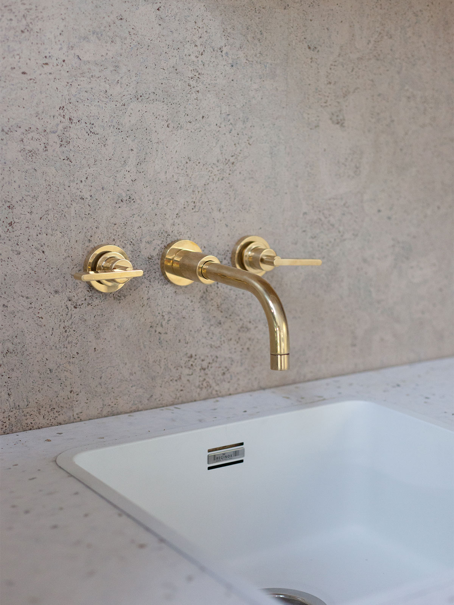
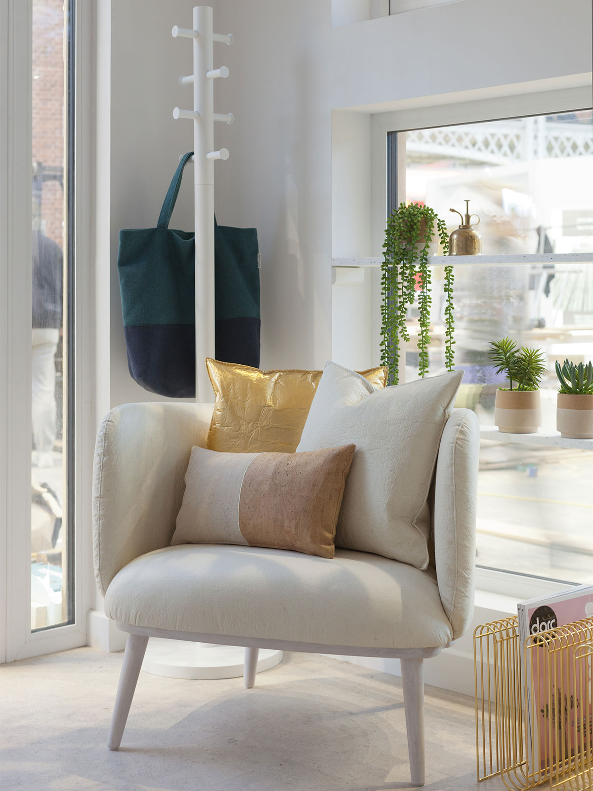

Jordan from 2LG Studio inside 'The Lovely Pod' at Ideal Home Show, Olympia, London (photo by Megan Taylor)
Jordan from 2LG Studio inside 'The Lovely Pod' at Ideal Home Show, Olympia, London (photo by Megan Taylor)
'The Lovely Pod' at Ideal Home Show, London Olympia (photo by 2LG)
'The Lovely Pod' at Ideal Home Show, London Olympia (photo by 2LG)
The beautiful shape of the ceiling as it curves right down to the floor, becoming a wall. The perfect place to house an exclusive preview of our new wallpaper collection for Graham and Brown. The new collection includes murals as well as wallpaper and this is our London Plane mural.
London Plane is the most abundant tree in London and we took a series of photos of a particular tree outside the V&A Museum. The characteristic patterns and colours of the bark caught our eye and when we got back to our studio and looked at the images we had taken we realised it was a truly beautiful texture. One that we wanted to live with since it reflects nature in the most wonderful way. A new way to connect you to nature in your home and at first you can’t tell what it is, even though it is so familiar to you. Looking again at something that is part of the texture of our environment. A tree that we perhaps take for granted, gives you something so beautiful when you really look at it. Turning it into a series of murals as part of our new collection, we recoloured elements to create a new must have interior wallcovering, perfect for a more mindful space. In the setting of this pod it almost gives a cave-like quality, but with a freshness that feels very uplifting. The lilac greys and soft greens of this colour way we have designed, is calming and pairs beautifully with the White kitchen.
The Lovely Pod - Design by 2LG Studio at Ideal Home Show 2018 (photo by Megan Taylor)
The Lovely Pod - Design by 2LG Studio at Ideal Home Show 2018 (photo by Megan Taylor)
London Plane Mural by 2LG Studio for Graham & Brown (Photo by Megan Taylor)
London Plane Mural by 2LG Studio for Graham & Brown (Photo by Megan Taylor)
Working closely with Naked Kitchens ( british manufacturer of solid wood kitchens) we designed a bespoke kitchen, complete with unique 2LG handle details and gold legs to make it freestanding. The drawers are deep and wide to store equipment and samples and there is a long cubby in the island/workstation to house fabric and wallpaper rolls. The worktop is by Smile Plastics (you may remember them from our bathroom design for our Granville Park interior project) and is made from recycled plastic – perfectly tactile and wipeable for a creative studio space.
2LG Studio designed pod, featuring bespoke Naked Kitchen.
2LG Studio designed pod, featuring bespoke Naked Kitchen.
Gold leg detail of bespoke Naked Kitchen, designed by 2LG Studio
Gold leg detail of bespoke Naked Kitchen, designed by 2LG Studio
The floor and kitchen wall at the end of the pod are clad in a beautiful cork tile. Easy to install, inexpensive, durable and sustainable. We love it and would gladly use it again as it is such a tactile finish.
Cork tiles and recycled plastic worktops (design by 2LG Studio, photo by Megan Taylor)

Cork tiles and recycled plastic worktops (design by 2LG Studio, photo by Megan Taylor)
2LG Studio (photo by Megan Taylor, business cards by TwoTimesElliott)
2LG Studio (photo by Megan Taylor, business cards by TwoTimesElliott)
The quadrant shape of the pod informs the curves of the kitchen island and also a fin-like wall that acts as a room divider, creating a breakout snug for reading, relaxing, thinking or perhaps taking a business call. You might also want to welcome a client in this area. The shape is defined further by the bespoke floor rug by crucial trading adding more softness and texture. The other side of the fin also houses a fabric library, courtesy of Romo, on simple brass hooks from a local hardware store.
The furniture is by Love your home. We had their elegantly curved Isaac armchair and poof made with white washed wooden legs to fit in with the simple scheme and upholstered in their pink velvet to give our signature touch of colour. Finished off with an amazing cork cushion from Mind the Cork.
Snug area (Design by 2LG Studio, photo by 2LG Studio)
Snug area (Design by 2LG Studio, photo by 2LG Studio)
Utensilo by Vitra, inside the Lovely Pod by 2LG Studio (Photo by Megan Taylor)
Utensilo by Vitra, inside the Lovely Pod by 2LG Studio (Photo by Megan Taylor)
This area becomes a useful storage space too with the beautiful and practical 'Utensilo' wall unit by Vitra in gloss white. Such a pleasing way to store your stationary. Utterly classic.
Curved break out zone in the Lovely Pod by 2LG Studio (photo by Megan Taylor)
Curved break out zone in the Lovely Pod by 2LG Studio (photo by Megan Taylor)
Photo by Megan Taylor, Ilustration by Joe Gamble, Design by 2LG Studio
Photo by Megan Taylor, Ilustration by Joe Gamble, Design by 2LG Studio
Bar stools can be a tricky one, especially if you want to work comfortably, so these ones by new recycled material brand, Pentatonic, are a real find. So comfortable and striking.
Russell and Jordan '2LG Studio' (photo by Megan Taylor)
Russell and Jordan '2LG Studio' (photo by Megan Taylor)
The Lovely Pod by 2LG Studio (photo by Megan Taylor)

The Lovely Pod by 2LG Studio (photo by Megan Taylor)
The other armchair to the left of the entrance is bespoke upholstered in Pinatex, an exciting new vegan alternative to leather, made from pineapple leaf fibre (a bi-product of the existing pineapple trade). Here we used their natural option on the chair and the gold (yes there is a gold version of Pinatex!) on a cushion to give it all a lift. The coat stand behind, by Menu, from Amara adds function by the doorway and is compact enough not to take too much room. The brass magazine rack by AYTM adds a touch of modern luxury with its curved wire frame.
Shelving, inset into the reveals of the windows, creates a wonderful feature that brings the outside in and lets you take a moment away from your laptop or phone to water and tend to your plants, here seen in cork pots by Mind the cork, commissioned by us with bespoke white bands to tie into our scheme.
The lighting is also giving us so much joy and also in keeping with the mindful vibes. The Clam pendant (here used as a dramatic grouping above the island) are designed by our friend, Dan Schofield, for Decode London. They have cute brass clamps holding them together and come in two halves tucked inside each other meaning that they use half the amount of packaging of a full globe light of the same size.
The wall lights play across the curved wall/ceiling with strong modern lines and led bulbs. These brass beauties are a steal from Dyke & Dean. They add edge to the visual with their angled configuration.
Clam Pendants by Decode by Dan Schofield (photo and interior design by 2LG Studio)
Clam Pendants by Decode by Dan Schofield (photo and interior design by 2LG Studio)
Wall lights by Dyke and Dean (photo and interior design by 2LG Studio)
Wall lights by Dyke and Dean (photo and interior design by 2LG Studio)
The cork pendant light by Nove Lighting is a total beaut and plugs in with a gorgeous brass wall bracket to allow you to reposition the light where you need it.
Wall light by Dyke and Dean (photo by Megan Taylor, Interior Design by 2LG Studio)
Wall light by Dyke and Dean (photo by Megan Taylor, Interior Design by 2LG Studio)
Nove Lighting 'Cork Pendant' (photo by Megan Taylor, Interior Design by 2LG Studio)
Nove Lighting 'Cork Pendant' (photo by Megan Taylor, Interior Design by 2LG Studio)
The one ornament in the space is a considered nod to our decorative streak, a vase from the incredible Elunid Glyn Ceramics. She takes vintage ceramic pieces found in charity shops and reimagines them as new forms. So beautiful in clean white ceramic.
Photo by Megan Taylor, Interior Design by 2LG Studio
Photo by Megan Taylor, Interior Design by 2LG Studio
2LG Studio at Ideal home Show (Photo by Megan Taylor)
2LG Studio at Ideal home Show (Photo by Megan Taylor)


 2LG x Savernake
2LG x Savernake Material futures – a 3D printed bio brick
Material futures – a 3D printed bio brick